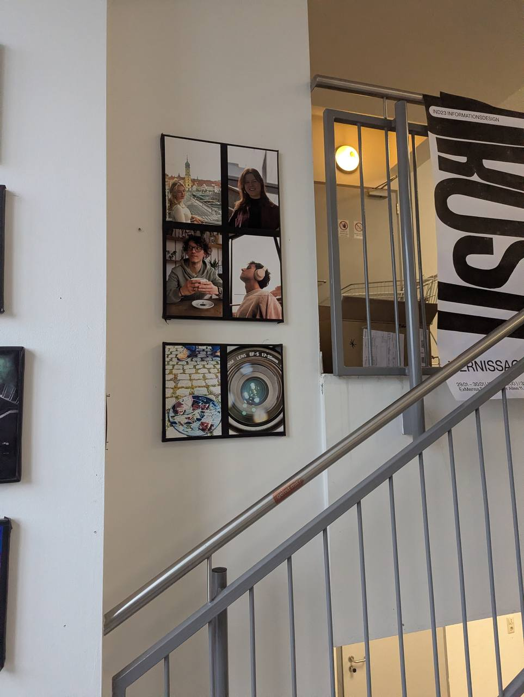
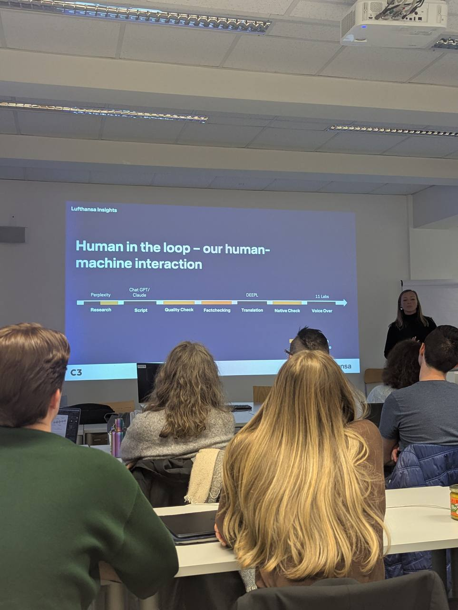
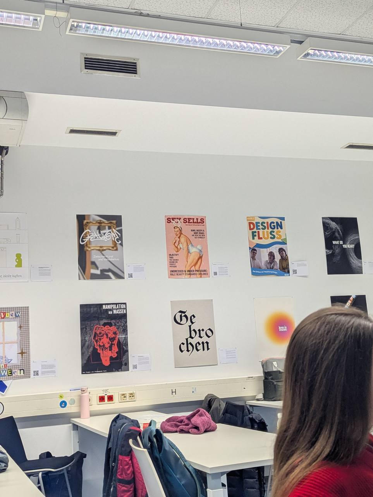

From Ads to Strategy: A New Chapter in Graz
Hi everyone! I’m Oleg. In November 2023, I moved to Austria. After years of managing programmatic campaigns for brands like Lindt and Ehrmann at IPG, I decided it was time to move beyond technical optimization and explore the creative side of communication.

Now, as a student in the Content Strategy (COS) program at FH Joanneum in Graz, I’m shifting my focus. Moving from the fast-paced world of digital ad agencies in Moscow to the academic environment in Styria has been an incredible journey.

What I love most about the COS program so far is the creative freedom. It’s not just about learning theory - it’s about implementing my own ideas and getting constant inspiration from my classmates. This portfolio is the first step in documenting this transformation.

Managing digital ad campaigns taught me how to reach people and now I’m learning how to truly connect with them through content. Stay tuned for more updates as I progress through the learning tasks!